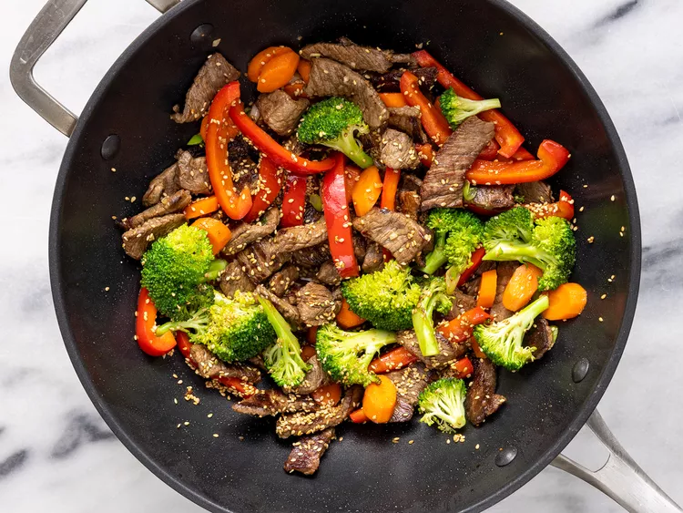

Want a quick, delicious meal prepped in under 30 minutes?
or need to use up some of your leftover vegetables and other pantry staple ingredients?
Look no further than a classic beef stir-fry. This beef and broccoli stir-fry comes together in just 25 minutes
and only requires ingredients that you probably already have. And if you don't? You can just skip them!
This dish is packed with veggies, beef, and saucy flavors for a weeknight dinner warrior that checks all the boxes.
Served with rice or lo mein noodles, this will be the best beef stir-fry you've ever made.
- 2 tablespoons vegetable oil
- 1 pound beef sirloin, cut into 2-inch strips
- 1 ½ cups fresh broccoli florets
- 1 red bell pepper, cut into matchsticks
- 2 carrots, thinly sliced
- 1 green onion, chopped
- 1 teaspoon minced garlic
- 2 tablespoons soy sauce
- 2 tablespoons sesame seeds, toasted
- Gather all ingredients

- Heat vegetable oil in a large wok or skillet over medium-high heat;
cook and stir beef until browned, 3-4 minutes

- Move beef to the side of the wok and add broccoli, bell pepper, carrots, green onion,
and garlic to the center of the wok. Cook and stir vegetables for 2 minutes.
- Stir beef into vegetables and season with soy sauce and sesame seeds.
Continue to cook and stir until vegetables are tender, about 2 more minutes.

- 268 Calories
- 16g Fat
- 9g Carbs
- 23g Protein
Return to previous page